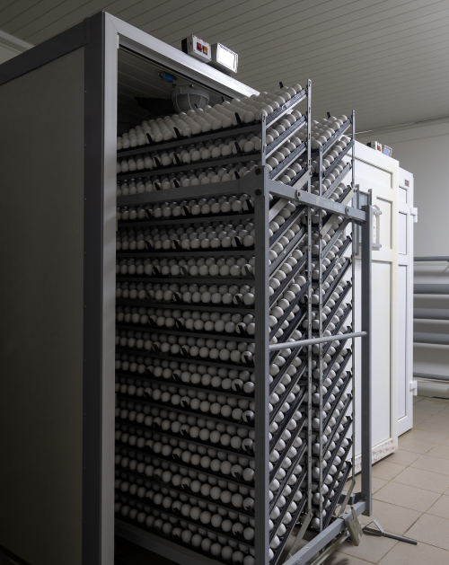

<!--chicken eggs -->

<section class="section-main section-hatching-eggs __one-article-page">
    <div class="container">
        <div class="section-inner __one-article-page">
            <div class="main-title-block __common-margin-bottom __one-article-page __circum-title">
                <h2 class="section-main-title __one-article-page">Куриное инкубационное яйцо для контроля качества и производства вакцин</h2>
            </div>

            <section class="section-content __one-article-page __first-row-content __mobile-column-reverse">
                <div class="image-block">
                    <picture class="picture image-block__picture">
                        
                    </picture>
                </div>
                <div class="text-block __one-article-page ">
                    <p>
                        <strong>Скорлупа эмбрионированных яиц белого цвета. Поверхность скорлупы ровная без бугристостей и видимых повреждений.</strong><br>
                    Срок хранения свободного от патогенной флоры (СПФ) куриного эмбрионированного яйца 0-суточного возраста (инкубационного) на складе Поставщика до момента отгрузки соответствует требованиям, установленным в ОСТ 10 321 -2003 (Яйца куриные инкубационные. Технические условия), а также другим Национальным, Региональным, Международным Стандартам (ГОСТ, OCT, ISO, ТУ и др.).
                        Яйцо упаковано в коробки (гофроящики) с использованием бугорчатых гофрированных картонных прокладок с ячейками; картонную тару одноразового использования.
                    </p>
                    <span><strong>Условия транспортирования обеспечивают:</strong></span>
                        <ul>
                    <li>
                        <span>
                            1  относительную влажность в пределах 40-80%;
                        </span>
                    </li>
                    <li>
                      <ul>
                          <li><span>2  скорость движения автомобиля по:</span></li>
                          <li><span>асфальтовым дорогам, не более 80 км/ч;</span></li>
                          <li><span> по грунтовым, не более 30 км/ч;</span></li>

                      </ul>
                    </li>
                    <li><span> Транспортная маркировка предполагает нанесение на коробкуманипуляционных знаков
                        «Осторожно, хрупкое!», «Верх, не кантовать».</span></li>
                </ul>
                    <span><strong>Характеристики:</strong></span>
                        <ul>
                            <li>
                                <span>Масса яйца, не менее, г - 52</span>
                            </li>
                            <li>
                                <span>Плотность яйца, не менее, г/см - 1,075</span>
                            </li>
                            <li>
                                <span>Толщина скорлупы, не менее, мм - 0,33</span>
                            </li>
                            <li>
                                <span>Высота воздушной камеры, мм - 1,5 - 4,0</span>
                            </li>
                        </ul>
                        <span>Содержание витаминов в желтке, не менее, мкг/г:</span>
                        <ul>
                            <li>
                                <span>- каротиноидов - 15;</span>
                            </li>
                            <li>
                                <span>- витамина А - 7;</span>
                            </li>
                            <li>
                                <span>- витамина В2- 4</span>
                            </li>
                        </ul>

                        <span>Оплодотворенность, не ниже %, - 90</span>
                        <span>Режим хранения инкубационных яиц:</span>
                    <ul>
                        <li>
                            <span>- в соответствии с ОСТ 10 321 -2003</span>
                        </li>
                        <li>
                            <span>- влажность, %; 75-80</span>
                        </li>
                    </ul>


                    </p>


                </div>

            </section>


        </div>
    </div>

</section>
<!--chicken eggs -->

